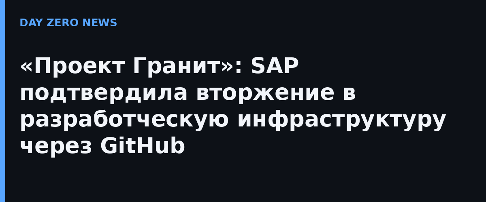

Немецкий софтверный гигант SAP подтвердил нескольким изданиям факт ИТ-инцидента. Формулировка скупая: компания «незамедлительно приняла необходимые меры, чтобы защитить клиентов и обеспечить безопасность своих сервисов» — это заявление цитирует dpa. Подозрительную активность, согласно внутреннему письму сотрудникам, технари заметили на платформе разработческой продуктивности и поставки софта — то есть на GitHub. Какие именно репозитории и проекты затронуты, не раскрывается; сотрудникам предложили проверить, не нужно ли сменить учётные данные.
Handelsblatt со ссылкой на источники в компании пишет: SAP ограничила доступ к GitHub, остановила автоматизированные процессы разработки и заменила ключи подписи кода. Spiegel называет внутреннее кодовое имя расследования — «Project Granite» — и добавляет сенсационную деталь: по материалам внутренних источников, атакующие, возможно, применяли агентский ИИ. Отдельного официального анонса у SAP нет — только устное подтверждение через dpa, поэтому детали назовём тем, чем они являются: сообщениями прессы со ссылкой на корпоративные круги, а не официальными уведомлениями. Сама компания подчёркивает: признаков несанкционированного доступа к деловым данным клиентов пока не обнаружено.
GitHub в последние месяцы — магнит для атакующих: в середине ноября появилась история про десятки тысяч захваченных репозиториев и украденных токенов-стерилей. И SAP далеко не единственная крупная жертва этой осени: среди названных пострадавших — ведомства США (включая подразделения ЦРУ и ФБР), FIFA, немецкие ритейлеры Deichmann и Hugendubel. Если версия про агентский ИИ подтвердится, это станет первым публично обсуждаемым случаем, где автономные ИИ-агенты применили против инфраструктуры разработчиков одной из самых дорогих компаний Европы — на фоне того же самого SAP, которое строит стратегию «ИИ прежде всего».
Клиентам SAP пока повода для паники нет: заявленных утечек клиентских данных нет, ждём официальных уведомлений. Разработчикам же — и сторонним — урок стандартный и от того не менее полезный: после любого инцидента в CI/CD-цепочке стоит ротировать GitHub-токены и секреты Actions, пересмотреть доверенные устройства и интегрированные приложения, а артефакты сборки сверять по свежим ключам подписи. Именно связка «токен разработчика → автосборка → подпись» остаётся самым тонким местом всей экосистемы.
<div class="src">Оригинал: <a href="https://www.heise.de/news/IT-Vorfall-bei-SAP-Entwicklungssysteme-betroffen-11539973.html">heise.de</a><br>
Первоисточник: официальный анонс компании отсутствует — подтверждение инцидента дано SAP только через заявление для dpa (<a href="https://newsroom.sap.com">newsroom.sap.com</a>)<br>
Подхватившие СМИ: <a href="https://cybersecuritynews.com/sap-security-incident/">cybersecuritynews.com</a>, <a href="https://www.spiegel.de/netzwelt/sap-wird-opfer-von-hackerangriff-a-6648b5ce-5d74-48dc-86ea-9469705bb91d">Spiegel</a>, <a href="https://www.handelsblatt.com/technik/ki/sap-it-sicherheitsvorfall-haben-verdaechtige-aktivitaeten-identifiziert/100273138.html">Handelsblatt</a></div>